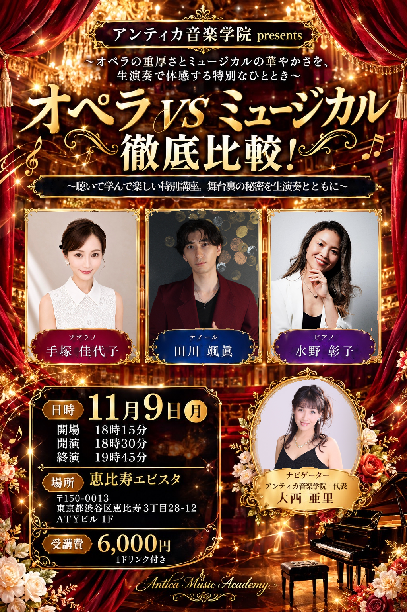
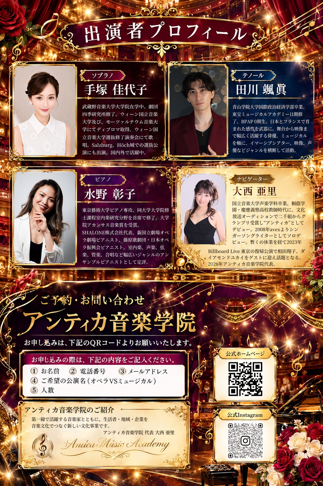

アンティカ音楽学院presents
オペラVSミュージカル 徹底比較！
2026年11月9日開催。オペラの重厚さとミュージカルの華やかさを、生演奏で体感する特別なひととき。


アンティカ音楽学院presents
オペラVSミュージカル 徹底比較！
聴いて学んで楽しい特別講座。舞台裏の秘密を生演奏とともに。
出演
- Soprano手塚 佳代子
- Tenor田川 颯眞
- Piano水野 彰子
- Navigator大西 亜里
公演紹介
オペラの重厚さとミュージカルの華やかさを、生演奏で体感する特別なひととき。
ソプラノ、テノール、ピアノによる演奏を交えながら、二つの舞台芸術の魅力と違い、舞台裏の秘密をわかりやすく紹介します。
開催概要
- 日程2026年11月9日（月）
- 時間18:15開場 / 18:30開演 / 19:45終演
- 会場恵比寿エビスタ
- 住所〒150-0013 東京都渋谷区恵比寿3丁目28-12 ATYビル1F
- 受講費6,000円（1ドリンク付き）
ご予約・お問い合わせ
お申し込みは、フライヤー裏面のQRコードよりお願いいたします。
- お名前
- 電話番号
- メールアドレス
- ご希望の公演名（オペラVSミュージカル）
- 人数
出演者プロフィール
手塚 佳代子 soprano
武蔵野音楽大学大学院在学中。劇団四季研究所修了。ウィーン国立音楽大学及び、モーツァルテウム音楽大学にてディプロマ取得、ウィーン国立音楽大学選抜修了演奏会にて歌唱。Salzburg、Höch城での選抜公演にも出演。国内外で活躍中。
田川 颯眞 tenor
青山学院大学国際政治経済学部卒業。東宝ミュージカルアカデミー11期修了、BPAP 0期生。日本とフランスで育まれた感性を武器に、舞台から映像まで幅広く活躍する俳優。ミュージカルを軸に、イマーシブシアター、映像、声優などジャンルを横断して活動。
水野 彰子 piano
東京藝術大学ピアノ専攻、同大学大学院修士課程室内楽研究分野を首席で修了。大学院アカンサス音楽賞を受賞。SHALONE株式会社代表、新国立劇場オペラ劇場ピアニスト、藤原歌劇団・日本オペラ振興会ピアニスト。室内楽、声楽、弦楽、管楽、合唱など幅広いジャンルのアンサンブルピアニストとして定評。
大西 亜里 navigator
国立音楽大学声楽学科卒業。桐蔭学園・慶應義塾高校教師時代に、文化放送オーディションで二千組からグランプリ受賞し“アンティカ”としてデビュー。2008年avexよりシンガーソングライターとしてソロデビュー。暫くの休業を経て2023年Billboard Live東京の復帰公演で相田翔子、ダイアモンドユカイをゲストに迎え話題となる。2026年アンティカ音楽学院代表。